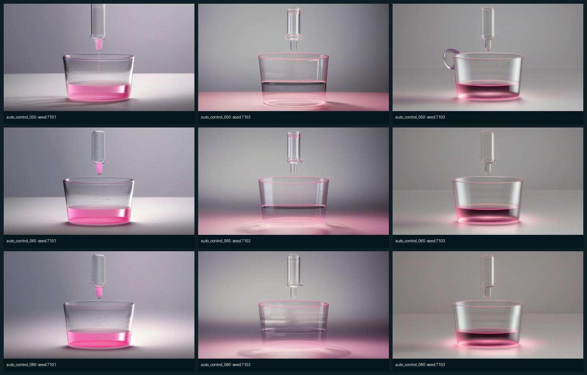
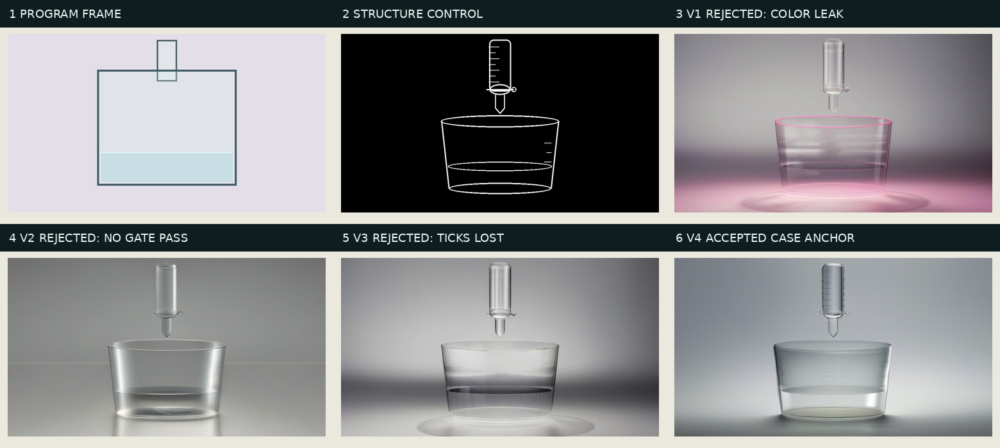
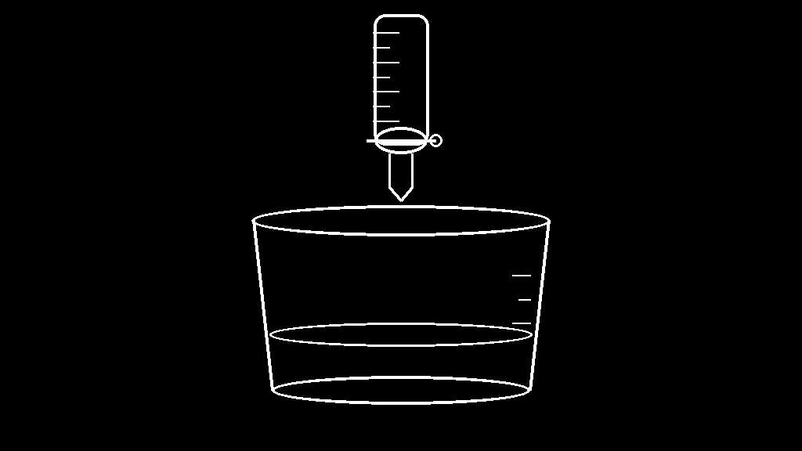
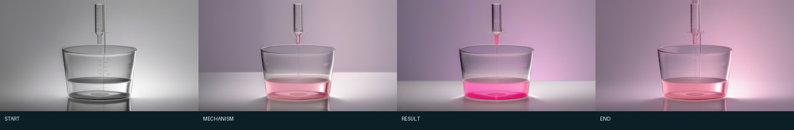
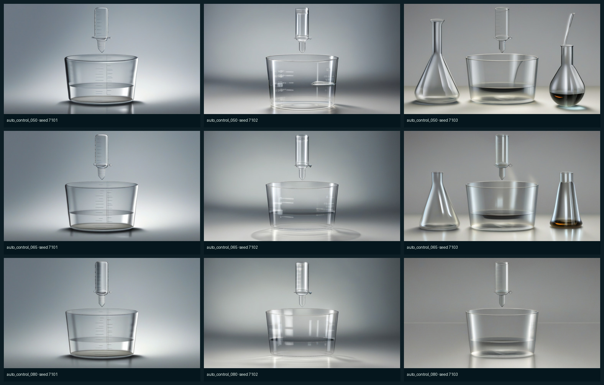
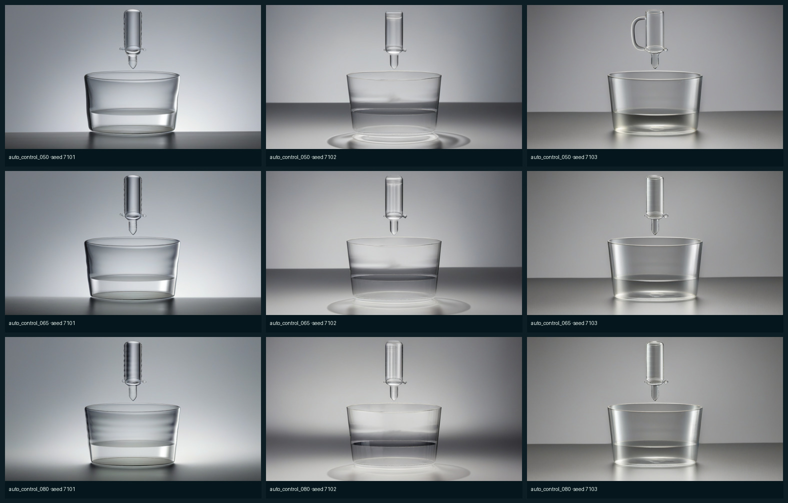
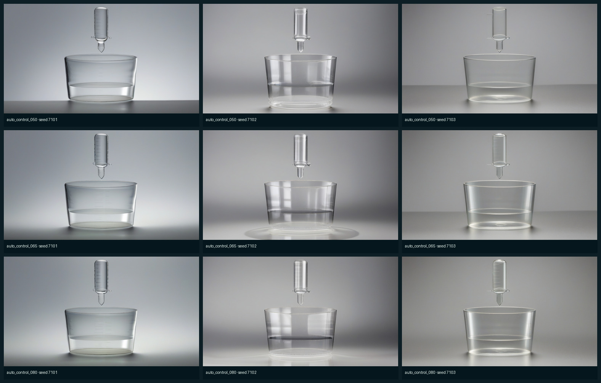
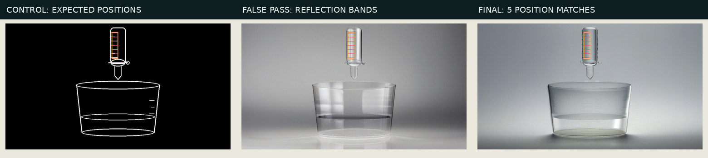

v1 / EXP-005：失败——颜色词极性写反
正向句子里写了 “no pink”。对扩散模型来说，pink 仍是一个被关注的词，所以九张都发粉。

本阶段不是为了证明一条神奇 prompt 可以解决所有案例，而是固定一套编译和验收方法。 同一合同、视觉目标、词表、控制图、模型、seed 和参数，会得到同一批候选与同一选择结论； 固定集合没有合格图时，系统明确失败。

词段只来自 Input Contract、Visual Target Package 和版本词表； CHEM-01、MATH-02、PHYS-01 均完成来源追踪和 token 预检。
最终选中 auto_control_080-s7101，
ControlNet scale 080，seed 7101。九张中只有一张通过，未推广成全局风格。
颜色词污染、无候选通过、外轮廓正确但内部刻度丢失。失败图没有删除，也没有包装成成功。
Canny 是什么：它是一种传统边缘检测算法，把亮暗突变变成线。本案例喂给模型的控制图不是把整张截图做 dense Canny，而是 Geometry Resolver 画出的干净语义线；“SDXL Canny ControlNet”之所以叫 Canny， 是因为它训练时学会理解这类边缘图。selector 另外使用 Canny 测量输出图的边缘是否贴近控制。
conditioning 是什么：它不是最后的图，而是影响扩散去噪过程的条件。正向文字描述想出现什么， 负向文字描述要压制什么；ControlNet conditioning 是结构线。ControlNet 返回中间特征残差，SDXL 把这些残差加进 自己的去噪网络后输出最终 RGB 图片。

来源：程序 object identity + hard boundary + canonical primitive。决定一个烧杯、一个上方滴定管、两者分离和内部刻度位置； 不读取外观参考图。

只提供玻璃、光照、色调和真实感目标；它的位置不能覆盖程序几何。

告诉词表和量表要避免器材漂移、背景变化、颜色泄漏；反例不作为结构输入。
正向句子里写了 “no pink”。对扩散模型来说，pink 仍是一个被关注的词，所以九张都发粉。

把 pink 移入负向提示后颜色恢复中性；没有候选同时满足轮廓精度、额外边缘和对比度，因此没有事后降门槛。

删除宽泛实验室语境后，8/9 通过旧门禁；人工语义复核发现所谓“滴定管”丢了刻度，暴露出 selector 只看外轮廓。

最终门禁只保留 1/9：scale 0.8、seed 7101。它成为 CHEM-01 Anchor，但单个通过样本不足以宣称所有 Case 都会改善。


v3 selector 只数黄色 ROI 里有多少组横向边缘，所以玻璃顶部的反光带也能凑够数量。
v4 改为由 canonical_graduated_tube_v1 provider 输出七个预期纵向位置和 ±3 px 容差，
候选至少匹配五个才通过。selector 代码只实现“重复水平标志”的通用测量，不包含
CHEM-01 或烧杯坐标；新 primitive 若有身份部件，也必须自己声明。
正向 prompt 不是一整段自由作文，而是：
scene identity + camera + material/light + state + must preserve。
negative prompt 是独立的反例/伪影槽。v1-v4 文件均冻结并记录 SHA-256。
正向 conditioning：
one open borosilicate glass beaker, one separate graduated glass burette, straight-on locked centered camera, thin transparent glass, clear liquid, realistic refraction, soft studio daylight, matte neutral laboratory background, initial solution remains colorless, no pink, air gap between burette tip and beaker rim, one of each, no text
负向 conditioning：
extra vessel, extra apparatus, fused parts, connecting rod, center line inside liquid, pseudo text, labels, arrows, background bottle, plastic, metal container, crop, tilt, blur, watermark
正向 conditioning：
one open borosilicate glass beaker, one separate graduated glass burette, straight-on locked centered camera, thin transparent glass, pure clear liquid, realistic refraction, soft neutral daylight, matte gray laboratory background, pure transparent solution with a neutral colorless appearance, air gap between burette tip and beaker rim, one of each, no text
负向 conditioning：
pink, magenta, colored liquid, colored lighting, extra vessel, extra apparatus, fused parts, connecting rod, center line inside liquid, pseudo text, labels, arrows, background bottle, plastic, metal container, crop, tilt, blur, watermark
正向 conditioning：
one open borosilicate glass beaker, one separate graduated glass burette, straight-on locked centered camera, thin clear borosilicate glass with crisp natural highlights, water-clear liquid, neutral softbox lighting, empty matte gray studio backdrop, pure transparent neutral solution, air gap between burette tip and beaker rim, one of each, no text
负向 conditioning：
pink, magenta, colored liquid, colored lighting, flask, bottle, Erlenmeyer flask, side object, extra vessel, extra burette, extra beaker, fused parts, connecting rod, center ruler, center line inside liquid, pseudo text, labels, arrows, plastic, metal container, crop, tilt, blur, watermark
正向 conditioning：
one clear glass beaker, one separate glass burette with seven visible horizontal graduation ticks on its left side, locked straight-on view, thin borosilicate glass, crisp natural highlights, clear liquid, neutral softbox light, empty matte gray backdrop, transparent neutral solution, air gap between burette tip and beaker rim, one of each, no text
负向 conditioning：
pink, magenta, colored liquid, colored lighting, flask, bottle, Erlenmeyer flask, side object, extra vessel, extra burette, extra beaker, fused parts, connecting rod, center ruler, center line inside liquid, pseudo text, labels, arrows, plastic, metal container, crop, tilt, blur, watermark
| 参数 | 本阶段值 | 普通话解释 | 是否参与本路线 |
|---|---|---|---|
| SDXL Base 1.0 FP16 | stabilityai/stable-diffusion-xl-base-1.0 | 主图片生成模型；FP16 是半精度权重，降低显存占用。 | 是 |
| SDXL Canny ControlNet FP16 | diffusers/controlnet-canny-sdxl-1.0 | 读取结构边缘并在 SDXL 去噪过程中提供空间残差。 | 是 |
| ControlNet scale | 0.50 / 0.65 / 0.80 | 结构残差的权重；越高通常越贴线，也可能更僵硬。三档在看图前冻结。 | 是 |
| seed | 7101 / 7102 / 7103 | 初始噪声编号；相同输入与运行时使用相同 seed 可重放同一候选。它不是质量分。 | 是 |
| steps | 30 | 去噪迭代次数；不是帧数。 | 是 |
| guidance scale | 6.0 | 文字条件相对无条件预测的影响强度。 | 是 |
| strength | 配置中保留 0.5 | 只有 Img2Img 才决定保留输入 RGB 的程度。本阶段实际为 controlnet_t2i，代码不会把 strength 传给 pipeline，因此它不影响结果。 | 否 |
| resolution / dtype | 1024×576 / float16 | 输出尺寸与模型计算精度。 | 是 |
| token preflight | v4 正 74、负 69；上限 77 | SDXL 有两个 tokenizer；任一会截断就停止，避免尾部“必须保留”静默丢失。 | 是 |
| Case | 外观 profile | 正/负 token | 编译 |
|---|---|---|---|
CHEM-01 | transparent_lab | 74 / 69 | 通过 |
MATH-02 | wood_geometry | 56 / 27 | 通过 |
PHYS-01 | water_field | 53 / 27 | 通过 |
边界：这三例证明 v5 编译器能够从数据配置路由 profile、生成六槽 prompt、 追踪来源并避免截断；S3.3 没有为 MATH-02 和 PHYS-01 新跑扩散候选，所以不宣称它们的图片质量已经提升。 CHEM-01 的 v4 词表只登记为案例级配置。
EXP-008 实际运行：AMD Radeon Graphics；
PyTorch 2.9.1+gitff65f5b，diffusers
0.35.2，scheduler
EulerDiscreteScheduler。本阶段共新生成 36 张图片候选、0 个视频候选。
权重指纹、每张图片哈希、生成耗时和显存记录在
generate.json；
最终门禁明细在 selection.json。
cd /workspace/Live-Document /opt/venv/bin/python -m modules.video_model.stage3.phase3_trial preflight --plan modules/video_model/stage3/prompt_trials/EXP-S3-20260730-008.json /opt/venv/bin/python -m modules.video_model.stage3.phase3_trial generate --plan modules/video_model/stage3/prompt_trials/EXP-S3-20260730-008.json /opt/venv/bin/python -m modules.video_model.stage3.phase3_trial select --plan modules/video_model/stage3/prompt_trials/EXP-S3-20260730-008.json /opt/venv/bin/python -m modules.video_model.stage3.phase3_finalize
注意：上面 trial plan 冻结的是 selector_v3，忠实重放 EXP-008 的第一次选择。
最终 position-matching selector_v4 是同一九张候选上的零模型回放，见 EXP-009 与
selection-v4-position-audit；没有追加 seed。